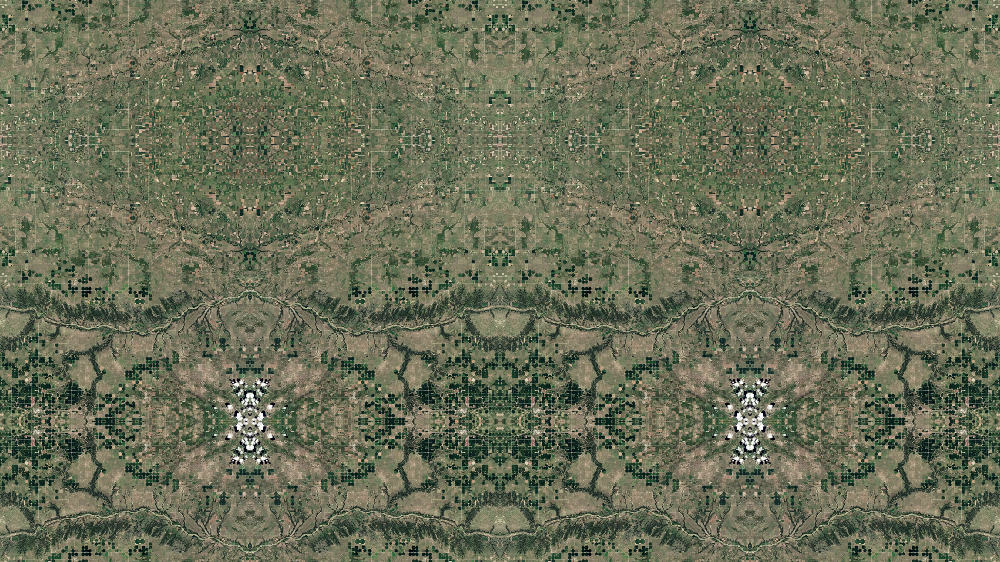
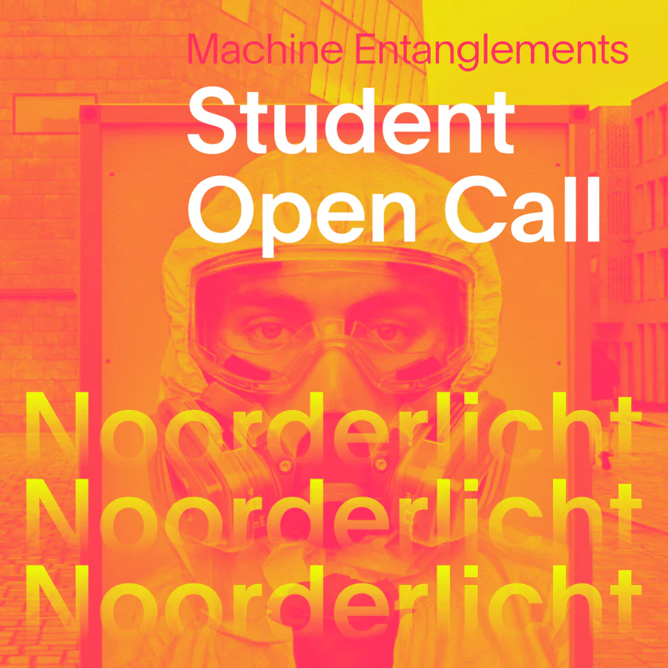

Noorderlicht Student Open Call — Machine Entanglements
Student Open Call (FMI MADtech)
Noorderlicht invited students worldwide from photography and lens-based media programmes to submit a single image on Machine Entanglements—the 2025 biennial theme on the intertwined relationship between technology, ecology, and heritage. All submissions were exhibited without selection or competition, presented alphabetically during the biennial. Submitted a still from Symmetrical Fictions: mirrored satellite tiles recomposed into speculative, symmetrical terrain—lens-based work at the intersection of surveillance imagery, landscape memory, and machine-mediated vision of the planet. Shown at De Proef, a working landscape and living archive on the grounds of the Netherlands' first horticultural school in Frederiksoord, as part of the biennial's exploration of technocultivation, data-driven care, and the entanglement of memory, progress, and the living landscape.

